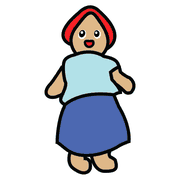
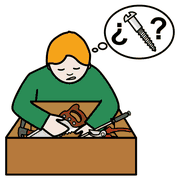
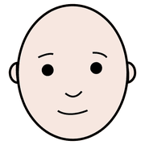
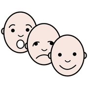

Modulo 2, conoscere
Teoria della mente
Capire che gli altri hanno pensieri, desideri e convinzioni diversi dai nostri ci sembra naturale. Per molti alunni nello spettro non lo è, e questo spiega tante incomprensioni in classe.
una sola
realtà, tante
teste
Che cos'è
 pensare
pensare capire
capire persona
personaCon teoria della mente si intende la capacità di attribuire a sé e agli altri degli stati mentali, e di usarli per spiegare e prevedere che cosa faranno le persone. Il termine nasce nel 1978 da uno studio di Premack e Woodruff sugli scimpanzé.
Serve a due cose. Sul piano sociale, a dare senso a quello che fanno gli altri e a capire se il nostro messaggio è arrivato. Sul piano adattivo, a prevedere, a cambiare strategia, a pensare prima di agire. La usiamo di continuo: «non l'ho chiamato perché pensavo che fosse in riunione», «ero convinta che la gita fosse domani».
si possono
mettere in scena
con due pupazzi
Come si valuta

bambola nascondere
nascondere
cercareLe prove classiche raccontano una piccola storia e chiedono al bambino che cosa pensa un personaggio che non sa come sono andate le cose.
Lo spostamento inatteso
Una bambina mette la biglia nel cestino ed esce. Mentre è fuori, un'amica sposta la biglia nella scatola. Quando la prima torna, dove la cercherà? Chi risponde «nel cestino» ha capito che lei non può sapere dello spostamento.
La scatola ingannevole
Si mostra al bambino la scatola di caramelle che conosce bene: dentro, a sorpresa, ci sono matite. Poi gli si chiede che cosa penserà un compagno che vede la scatola chiusa per la prima volta.
Per l'età scolare si usano anche le storie di passi falsi: un personaggio dice una cosa che ferisce, senza volerlo. Per esempio Luca rovescia per sbaglio il succo sul quaderno di Sara, e lei per consolarlo dice: «Tranquillo, tanto quel quaderno me l'aveva regalato la nonna e non mi è mai piaciuto». Ci si chiede: qualcuno ha detto qualcosa che non doveva dire? Perché?
Che cosa succede nello spettro
capire
faccia
emozioniNello studio più famoso, del 1985, Baron-Cohen, Leslie e Frith proposero la prova dello spostamento a bambini con sviluppo tipico, con sindrome di Down e con autismo. Nei primi due gruppi quasi tutti risposero correttamente; tra i bambini con autismo solo uno su cinque.
Da qui l'ipotesi che una difficoltà nella teoria della mente spieghi molti tratti dell'autismo:
- Comunicazione non verbale. Manca spesso il gesto di indicare per mostrare qualcosa a qualcuno («guarda!»), mentre c'è quello per chiedere.
- Conversazione. È faticoso capire al volo che cosa l'altro intende davvero: doppi sensi, battute, richieste indirette. Gli scambi diventano poco gratificanti e si evitano.
- Empatia. Mettersi nei panni dell'altro richiede di immaginare che cosa sa e che cosa si aspetta.
Oggi la teoria della mente è considerata una spiegazione tra le altre, accanto alle funzioni esecutive e allo stile percettivo. Molti adulti nello spettro superano le prove, pur faticando nella vita reale. E la difficoltà è reciproca: anche noi facciamo fatica a capire il loro punto di vista.
gioco da fare
anche tra
colleghi
Prova in classe
 classe
classe storia
storia domanda
domanda- Raccogli le tue frasi implicitePer un giorno annota le richieste indirette che fai in classe («qui c'è un po' di confusione…»).
- Riscrivile in modo esplicitoChi, che cosa, quando: una frase per ciascuna.
- Metti in scena una falsa credenzaCon due pupazzi e una scatola, per tutta la classe: è un'ottima attività anche di educazione emotiva.